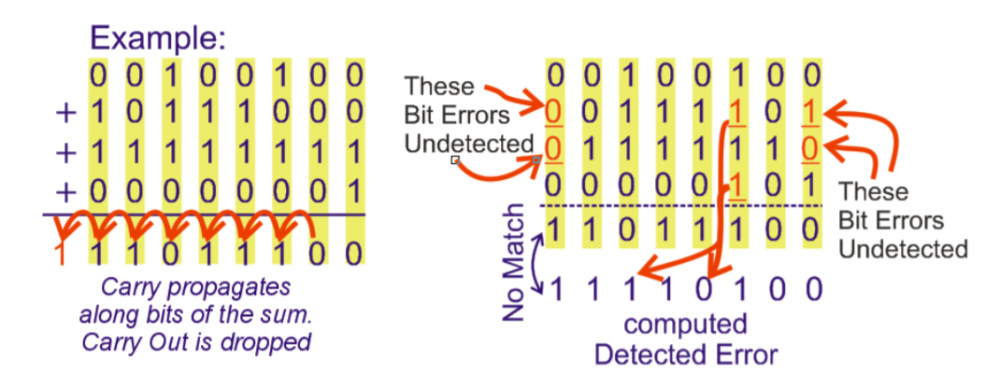
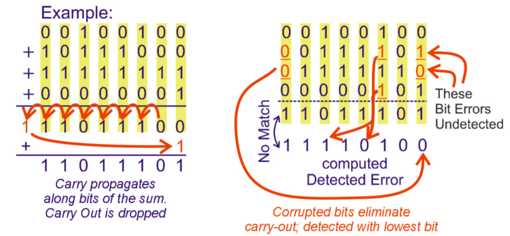
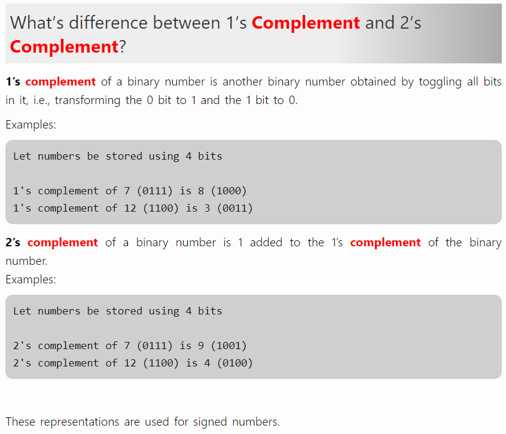
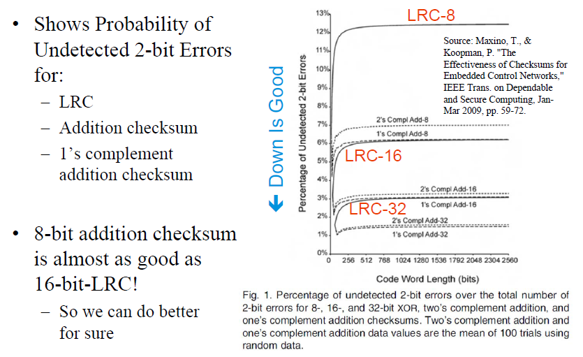
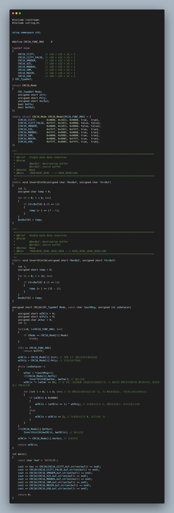

# 奇偶校验
# 介绍
奇偶校验位（英语：parity bit）或校验比特（英语：check bit）是一个表示给定位数的二进制数中 1 的个数是奇数还是偶数的二进制数。奇偶校验位是最简单的错误检测码。
# 原理
奇偶校验常见于串口数据收发，如其名，可分为奇校验和偶校验：
奇校验：原始码流 + 校验位，其 “1” 的个数为奇数，则校验位为 “0”；若为偶数，则校验位为 “1”。
偶校验：原始码流 + 校验位，其 “1” 的个数为奇数，则校验位为 “1”；若为偶数，则校验位为 “0”。
奇校验是在每个字节后增加一个附加位，使得 “1” 的总数为奇数；而偶校验是在每个字节后增加一个附加位，使得 “1” 的总数为偶数。
eg：
以偶校验位来说，如果一组给定数据位中 1 的个数是奇数，补一个 bit 为 1，使得总的 1 的个数是偶数。例：0000001, 补一个 bit 为 1, 00000011。
以奇校验位来说，如果给定一组数据位中 1 的个数是奇数，补一个 bit 为 0，使得总的 1 的个数是奇数。例：0000001, 补一个 bit 为 0, 00000010。
其原理是：假如采用奇校验，发送端发送的一个字符编码（含校验位）中，“1” 的个数一定为奇数个，在接收端对接收字符二进制位中的 “1” 的个数进行统计，若统计出 “1” 的个数为偶数个，则意味着传输过程中有 1 位（或奇数位）发生差错。
# 应用场景
奇校验通常用于同步传输；偶校验常用于异步传输或低速传输。
# 总结
虽然这个校验应该算是校验算法中最简单的，可是它却有不足之处：
如果数据传输过程只有奇数个码位变化，那么不管变化在哪我们都可以直接判断数据传输是错误的，但是一旦有偶数位发生了变化，或者出现移位情况，我们就无法检测到错误，该方法的校错率是 50%。
eg：
奇校验 正确码流 11000001
错 1 位 11000011 变成了偶数个 1，能检测出错误
错 2 位 11001011 变成了奇数个 1，检测不出错误
出现移位 11000010 变成了奇数个 1，检测不出错误
# 校验和
# 介绍
校验和（英语：Checksum）是冗余校验的一种形式。 它是通过错误检测方法，对经过空间（如通信）或时间（如计算机存储）所传送数据的完整性进行检查的一种简单方法。
# 原理
所谓校验和，就是将被校验数据进行 “累加”，并省略 “累加” 溢出的位，最终得到的 1 个或多个字节的结果。这个 “累加”，可以是简单的整数加法校验，又或者是反码加法校验等等。
一般常用的有：
A、整数加法校验和（Integer Addition Checksum）
其操作如加法运算一样，把数据值累加，最后省略高位。

在熟知其操作后，我们来看下误码率；假设传输数据以两个 bit 为单位，进行传输两个两位数 00b 和 00b ，则该校验和为：00+00=00，那么在传输过程中其出现错码的数据有以下，那么来简单分析下本次校验出错的概率有多少：
| 00b | 01b | 10b | 11b | |
|---|---|---|---|---|
| 00b | 00b | 01b | 10b | 11b |
| 01b | 01b | 10b | 11b | 00b |
| 10b | 10b | 11b | 00b | 01b |
| 11b | 11b | 00b | 01b | 00b |
如上表所示，在传输两个两位数 00b 和 00b 时，会有其余三种组合相加校验和也是 00，所以有 3/16 的概率会校验出错的，约为 1/4；但当数据的位宽越大，校验出错概率越低。
B、反码加法校验和（One’s Complement Addition Checksum）
反码加法校验，实际就是先进行整数加法运算，然后将进位加回来。

该处理相对于上一个的整数加法校验，由于需要加上进位操作，所以校验出错概率比它低一点。
# 补充
由于有讲到 One’s Complement ，所以在这里稍微说一下：one's-complement 和 two's-complement 以及 one's complement sum 和 two's complement sum。
one's-complement 和 two's-complement
前者表示：反码，高位为符号位；后者表示：补码，高位为符号位。

参考：https://tutorialspoint.dev/computer-science/computer-organization-and-architecture/whats-difference-between-1s-complement-and-2s-complement
one's complement sum 和 two's complement sum
前者表示：反码加法，需要加上进位；

后者表示：补码加法，舍弃进位。

参考：《Short description of the Internet checksum》


# 纵向冗余校验（LRC）
# 介绍
纵向冗余校验（LRC）是一种从纵向通道上的特定比特串产生校验比特的错误检测方法；而最常用的是 LRC-8 错误检验，除此之外，还有 LRC-16、 LRC-32，它们是逐字节的奇偶校验计算，通过将数据字的所有字节异或在一起，生成一个对应字节的校验数。下面以 LRC-8 为说明。
# 原理
通过对数据拆分为单字节，并利用纵向排列，把对应的字节位异或计算，最终得到一个单字节校验数：

# 应用处理

然后，它有什么特点呢：
- 可以检测垂直切片分析中所有奇数的比特错误
- 无法检测垂直切片分析中偶数个比特的错误
- 可以检测所有 1 位错误或检测单个字节内的所有错误
- 可以检测多个 2 位错误，但并不是所有的 2 位错误类型都可检测到
所以，最终得到的是：在检测同一垂直切片分析中的任何 2 位（bit）出现错误都是不可检测的。
最后附一张到目前介绍为止的检测概率图：

# 循环冗余校验（CRC）
# 介绍
循环冗余校验（英语：Cyclic redundancy check，通称 “CRC”）是一种根据网络数据包或电脑文件等数据产生简短固定位数校验码的一种散列函数，主要用来检测或校验数据传输或者保存后可能出现的错误。生成的数字在传输或者存储之前计算出来并且附加到数据后面，然后接收方进行检验确定数据是否发生变化。由于本函数易于用二进制的电脑硬件使用、容易进行数学分析并且尤其善于检测传输通道干扰引起的错误，因此获得广泛应用。
# CRC 多项式
多项式的选择是 CRC 算法实现中最重要的部分，所选择的多项式必须有最大的错误检测能力，同时保证总体的碰撞概率最小。多项式最重要的属性是它的长度，也就是最高非零系数的数值，因为它直接影响着计算的校验和的长度。
最常用的多项式长度有
- 9 位（CRC-8）
- 17 位（CRC-16）
- 33 位（CRC-32）
- 65 位（CRC-64）
在构建一个新的 CRC 多项式或者改进现有的 CRC 时，一个通用的数学原则是使用满足所有模运算不可分解多项式约束条件的多项式。
- 这种情况下的不可分解是指多项式除了 1 与它自身之外不能被任何其它的多项式整除。
生成多项式的特性可以从算法的定义中推导出来：
- 如果 CRC 有多于一个的非零系数，那么 CRC 能够检查出输入消息中的所有单数据位错误。
- CRC 可以用于检测短于 2k 的输入消息中的所有双位错误，其中 k 是多项式的最长的不可分解部分的长度。
- 如果多项式可以被 x+1 整除，那么不存在可以被它整除的有奇数个非零系数的多项式。因此，它可以用来检测输入消息中的奇数个错误，就像奇偶校验函数那样。
# 多项式与二进制数码
假设一个多项式为 G(x)=x^4+x^3+x+1 ， 可转换为二进制数码 11011b 。
等式 G(X)=x^4+x^3+x+1 ，可以写成 G(X) = 1*(X^4) + 1*(X^3) + 0*(X^2) + 1*(X^1) + 1*(X^0)
总结：有幂次就为 1，没有幂次就为 0，首尾一定要是 1， 所以 G(x)=x^4+x^3+x+1 为 11011b 。
# CRC 校验核心
从上面可以看出，CRC 校验中有两个关键点：
- 一是要预先确定一个发送端和接收端都用来作为除数的二进制比特串（或多项式）；
- 二是把原始帧与上面选定的除进行二进制除法运算，计算出 FCS。
前者可以随机选择，也可按国际上通行的标准选择，但最高位和最低位必须均为 “1”，如在 IBM 的 SDLC（同步数据链路控制）规程中使用的 CRC-16（也就是这个除数一共是 17 位）生成多项式 G（x）= x^16 + x^15 + x^2 +1 （对应二进制比特串为： 11000000000000101b ）；而在 ISO HDLC（高级数据链路控制）规程、ITU 的 SDLC、X.25、V.34、V.41、V.42 等中使用 CCITT-16 生成多项式 G（x）= x^16 + x^15 + x^5 +1 （对应二进制比特串为： 11000000000100001b ）。
# 校验原理
CRC 算法的是以 GF (2)(2 元素伽罗瓦域) 多项式算术为数学基础的，原理看起来比较复杂、好难懂，但实际上它的主要特点和运算规则是很好理解的。
在 CRC 算法中，其运算法制使用 “模 2 算术” 运算。
A、模 2 加减法运算
模 2 加法运算：1+1=0，0+1=1，0+0=0，无进位，也无借位
模 2 减法运算：1-1=0，0-1=1，1-0=1，0-0=0，无进位，也无借位
显然，加和减是一样的效果 (故在 GF (2) 多项式中一般不出现 "-" 号)，相当于二进制中的逻辑异或运算；也就是相互比较后，两者对应位相同则结果为 “0”，不同则结果为 “1”。
eg：
多项式： P1 = x^3 + x^2 + 1，P2 = x^3 + x^1 + 1，P1 + P2 =
x^3 + x^2 + 1
+ x^3 + x^1 + 1
------------------------------
x^2 + x^1
二进制： P1 = 1101，P2 = 1011，P1 + P2 =
1 1 0 1
+ 1 0 1 1
--------------
1 1 0
B、模 2 乘法运算
GF (2) 多项式乘法和一般多项式乘法基本一样，只是在各项相加的时候按模 2 算术进行，同样的，无进位，也无借位。
eg：
多项式： P1 = x^3 + x^2 + 1，P2 = x^3 + x^1 + 1，P1 x P2 =
(x^3 + x^2 + 1) (x^3 + x^1 + 1)
= (x^6 + x^4 + x^3
+ x^5 + x^3 + x^2
+ x^3 + x + 1)
= x^6 + x^5 + x^4 + x^3 + x^2 + x + 1
二进制： P1 = 1101，P2 = 1011，P1 x P2 =
1 1 0 1
x 1 0 1 1
--------------------
1 1 0 1
1 1 0 1
0 0 0 0
+ 1 1 0 1
--------------------
1 1 1 1 1 1 1
C、模 2 除法运算
多项式： P1 = x^5 + x^2 + 1，P2 = x^3 + x^2 + x^1，P1 / P2 =
x^2 x^1
----------------------------------
x^3 + x^2 + x^1 ) x^5 + x^2 + 1
x^5 + x^4 + x^3
----------------------------------
x^4 + x^3 + x^2
x^4 + x^3 + x^2
----------------------------------
1
二进制： P1 = 100101，P2 = 1110，P1 x P2 =
1 1
---------------
1 1 1 0 ) 1 0 0 1 0 1
1 1 1 0
---------------
1 1 1 0
1 1 1 0
---------------
1
具体来说，CRC 校验原理就是以下几个步骤：
（1）先选择（可以随机选择，也可按标准选择，具体在后面介绍）一个用于在接收端进行校验时，对接收的帧进行除法运算的除数（是二进制比较特串，通常是以多项方式表示，所以 CRC 又称多项式编码方法，这个多项式也称之为 “生成多项式”）。
（2）看所选定的除数二进制位数（假设为 k 位），然后在要发送的数据帧（假设为 m 位）后面加上 k-1 位 “0”，然后以这个加了 k-1 个 “0“的新帧（一共是 m+k-1 位）以 “模 2 除法” 方式除以上面这个除数，所得到的余数（也是二进制的比特串）就是该帧的 CRC 校验码，也称之为 FCS（帧校验序列）。但要注意的是，余数的位数一定要是比除数位数只能少一位，哪怕前面位是 0，甚至是全为 0（附带好整除时）也都不能省略。
（3）再把这个校验码附加在原数据帧（就是 m 位的帧，注意不是在后面形成的 m+k-1 位的帧）后面，构建一个新帧发送到接收端，最后在接收端再把这个新帧以 “模 2 除法” 方式除以前面选择的除数，如果没有余数，则表明该帧在传输过程中没出错，否则出现了差错。

# 计算步骤
假设以最常用的 CRC-16_MODBUS 为例：
（1）、预置 1 个 16 位的寄存器值 0xFFFF，称此寄存器为 CRC 寄存器；
（2）、把第一个 8 位二进制数据（既通讯信息帧的第一个字节）与 16 位的 CRC 寄存器的低 8 位相异或，把结果放于 CRC 寄存器，高八位数据不变；
（3）、把 CRC 寄存器的内容右移一位（朝高位）用 0 填补最高位，并检查右移后的移出位；
（4）、如果移出位为 0 则重复第 3 步（再次右移一位）；如果移出位为 1，那么将 CRC 寄存器与一多项式（A001）进行异或；
（5）、重复步骤 3 和 4，直到右移 8 次，这样整个 8 位数据全部进行了处理；
（6）、重复步骤 2 到步骤 5，进行通讯信息帧下一个字节的处理；
（7）、将该通讯信息帧所有字节按上述步骤计算完成后，得到的 16 位 CRC 寄存器的高、低字节进行交换；
（8）、最后得到的 CRC 寄存器内容即为：CRC 码。
以上计算步骤中的多项式 A001 是 8005 按位颠倒后的结果。
# CRC-16 实现代码
常用 CRC-16 码表：
| Algorithm | Poly | Init | RefIn | RefOut | XorOut |
|---|---|---|---|---|---|
| CRC16_CCITT | 0x1021 | 0x0000 | true | true | 0x0000 |
| CRC16_CCITT_FALSE | 0x1021 | 0xFFFF | false | false | 0x0000 |
| CRC16_XMODEM | 0x1021 | 0x0000 | false | false | 0x0000 |
| CRC16_X25 | 0x1021 | 0xFFFF | true | true | 0xFFFF |
| CRC16_MODBUS | 0x8005 | 0xFFFF | true | true | 0x0000 |
| CRC16_IBM | 0x8005 | 0x0000 | true | true | 0x0000 |
| CRC16_MAXIM | 0x8005 | 0x0000 | true | true | 0xFFFF |
| CRC16_USB | 0x8005 | 0xFFFF | true | true | 0xFFFF |
这里只演示常用的 CRC-16 的部分程序：
